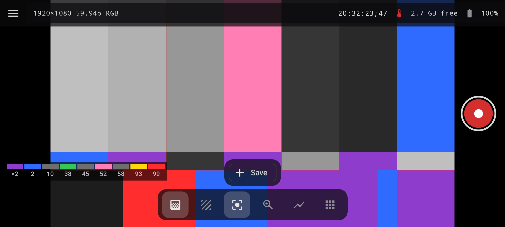
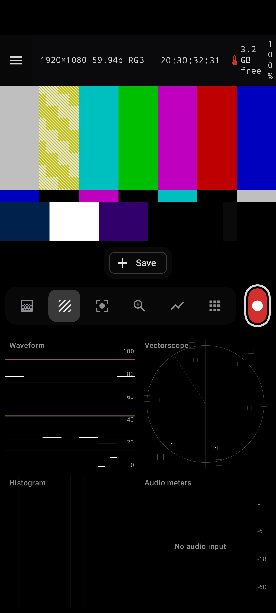

Choose a way to expose
Signal, stops-from-middle-grey, simple three-colour or custom-band modes with an on-screen legend.
FIELD MONITOR / TOOLKIT
Put scopes, exposure aids, focus tools, colour preview, framing guides and recording controls around your HDMI feed or camera input.

Exposure / 01
Read levels in several ways, set the display around your production, and keep the guides visible while you check the shot.
Signal, stops-from-middle-grey, simple three-colour or custom-band modes with an on-screen legend.
Set two independent zebras, including a highlight limit and a band to watch in the image.
Highlight and shadow clipping warnings, per-channel clipping, edge view and exposure-compensation preview.
Place up to four probes to inspect IRE, RGB percentage, code value or stops relative to 18% grey.
Adjust the peaking colour, sensitivity and thickness, or switch to a peaking-only view.
Move a picture-in-picture loupe over the image with pixel-exact 1×, 2×, 4× or 8× magnification.

Scopes / 02
GPU-rendered scopes give the incoming image a second view, independent of the monitor picture itself.
Luma, RGB overlay, RGB parade and YCbCr parade with selectable scales, a graticule and reference lines.
Rec.709 or Rec.2020 targets, skin-tone reference and adjustable display magnification.
Inspect luma, RGB overlay or stacked channels and watch clipping counters.

Colour / 03
Monitoring adjustments and production overlays are designed to be available alongside the picture, not hidden in a post-production handoff.
Import .cube and .3dl files, organise favourites, set defaults per input and view generic log-to-Rec.709 conversions.
Convert HLG or PQ inputs to SDR automatically when the input is configured as HDR.
Use common aspect guides, safe areas, grids, centre marks, anamorphic de-squeeze and level.
Store up to four stills and compare using A/B, a split wipe or onion skin.
Record a clean feed or a feed with LUT; hardware, resolution and encoding limits depend on the Android device.
Browse recordings, rate takes, add tags and notes, and export a shot log in CSV or PDF.
Local network / Pro
Streaming is optional and off by default. It is a direct feature, not a cloud relay operated by EKIIRA.
More FieldScope Pro
Use the built-in camera with tap focus, manual exposure, RAW stills, advanced focus tools and camera log modes where hardware supports them.